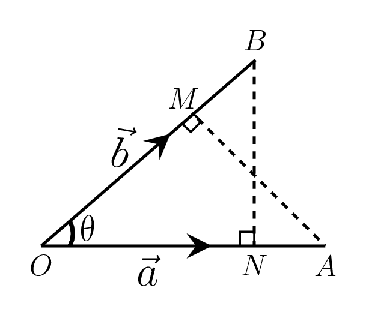
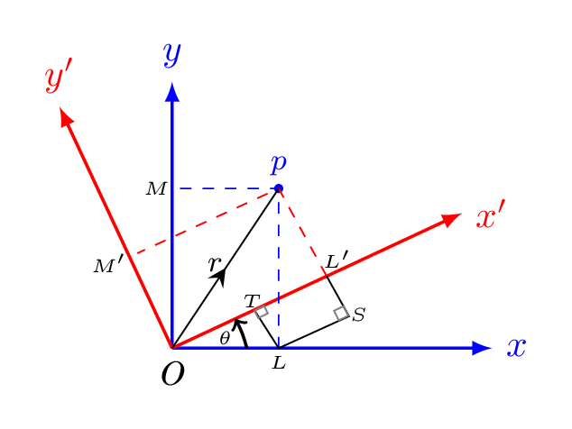

Section 2.1 Algebra of Vectors
The mathematical operations of addition, subtraction, and multiplication in the algebra of numbers are also capable of getting extension in an algebra of vectors. A vector whose effect is same as that of a set of two vectors is called the resultant of the given vectors. Let \(\vec{OP} = \vec{a}\) and \(\vec{PQ} = \vec{b}\) are two vectors as shown in Figure 2.1.1.(a)–2.1.1.(b), then the resultant vector \(\vec{OQ} = \vec{r}\) is the sum of \(\vec{a}\) and \(\vec{b}\text{,}\) i.e., \(\vec{r}=\vec{a} + \vec{b}\) as shown in Figure 2.1.1.(c).
The resultant vector \(\vec{r'}\) or the subtraction of \(\vec{b}\) from \(\vec{a}\) is the addition of a negative vector of \(\vec{b}\) (i.e., \(-\vec{b}\)) to a \(\vec{a}\text{,}\) i.e.,
\begin{equation*}
\vec{r'} = \vec{a} - \vec{b} = \vec{a} + (-\vec{b})
\end{equation*}
as shown in Figure 2.1.1.(d). The resultant vector can be obtained by arranging the two individual vectors in such a way that the head of one vector falls onto the tail of another one without changing their individual directions. The resultant vector then joins the tail of first vector to the head of second vector (Remember the resultant vector is not in cyclic orientation of the individual vectors). If a vector \(\vec{a}\) is multiplied by any real positive number \(n\text{,}\) then the product \(n \vec{a}\) is a vector whose magnitude is \(n\) times as that of \(\vec{a}\) and its direction is the same as \(\vec{a}\text{.}\) If \(n\) is a negative number then the direction of \(n \vec{a}\) is opposite to \(\vec{a}\text{.}\) If \(\hat{a}\) is a unit vector in the direction of \(\vec{a}\) then, we have
-
\(\vec{a} = |a| \hat{a},\) where \(|a|\) is a magnitude of \(\vec{a}\text{.}\)
-
\((k+l)\vec{a} = (k+l)a \hat{a} = k a \hat{a} + l a \hat{a} = k \vec{a} + l \vec{a},\) where \(k\) and \(l\) are scalars.
-
\(k(\vec{a} + \vec{b}) = k \vec{a} + k\vec{b}\text{.}\)
-
\(k(l\vec{a}) = (k l) \vec{a}\text{.}\)
Subsection 2.1.1 Components of a Vector:
A vector \(\vec{r}\) can be resolved into its components in a coordinate system. Suppose a vector \(\vec{a}\) is lying on the xy-plane as shown in Figure 2.1.2.(a), then its x- and y- components are given as \(\vec{a_{x}}\) and \(\vec{a_{y}}\text{,}\) respectively. Hence the vector \(\vec{a} \) can be written as
\begin{equation*}
\vec{a} = \vec{a_{x}} + \vec{a_{y}} = a_{x}\hat{i} + a_{y}\hat{j} =a\cos\theta \hat{i}+a\sin\theta \hat{j}
\end{equation*}
where \(a_{x} =a\cos\theta\) and \(a_{y}=a\sin\theta \) are the magnitude of vector components \(\vec{a_{x}}\) and \(\vec{a_{y}}\text{,}\) respectively. The magnitude of vector \(\vec{a} \) is given by
\begin{equation*}
a^{2}= a^{2}_{x}+a^{2}_{y} \quad \Rightarrow |\vec{a}|=\sqrt{a^{2}_{x}+a^{2}_{y}}.
\end{equation*}
The direction of \(\vec{a}\) can be obtained by
\begin{equation*}
\tan\theta =\frac{a_{y}}{a_{x}} \quad \Rightarrow \theta=\tan^{-1}\frac{a_{y}}{a_{x}}.
\end{equation*}
Let the diagonal vector of a parallelopiped, \(\vec{OP} = \vec{r}\) is described by a coordinate (x,y,z) in a rectangular system as shown in Figure 2.1.2.(b) and \(\hat{i}\text{,}\) \(\hat{j}\text{,}\) and \(\hat{k}\) are the unit vectors along \(OX\text{,}\) \(OY\text{,}\) and \(OZ\) axes, respectively then \(\vec{OA} = x \hat{i}\text{,}\) \(\vec{OB} = y \hat{j}\text{,}\) and \(\vec{OC} = z \hat{k}\) are the rectangular components of \(\vec{r}\text{.}\) Now,
\begin{equation}
\vec{r} = \vec{OP} = (\vec{OF} + \vec{FP}) \tag{2.1.1}
\end{equation}
\begin{equation}
\text{and} \quad \vec{OF} = \vec{OA} + \vec{AF} \tag{2.1.2}
\end{equation}
\begin{equation}
\therefore \quad \vec{r} = \vec{OA} + \vec{OB} + \vec{OC} = x \hat{i} + y \hat{j} + z \hat{k} \tag{2.1.3}
\end{equation}
\begin{equation*}
\because\quad \vec{AF}= \vec{OB}; \quad \vec{FP} = \vec{OC}
\end{equation*}
If \(\vec{OP}\) makes angles \(\alpha\text{,}\) \(\beta\text{,}\) and \(\gamma\) with OX, OY, and OZ axes, respectively then \(x=r\cos\alpha\text{,}\) \(y=r\cos\beta\text{,}\) and \(z=r\cos\gamma\text{.}\)
Subsection 2.1.2 Product of Two Vectors:
There are two ways in which vectors can be multiplied. The product of one of them is a scalar quantity, called a scalar product (or a dot product) and the other is a vector quantity, called a vector product (or a cross product).
Subsubsection 2.1.2.1 Scalar (or Dot) Product
The scalar product of two vectors \(\vec{a}\) and \(\vec{b}\) is denoted by \(\vec{a}\cdot \vec{b}\text{,}\) and is defined as
\begin{equation*}
\vec{a}\cdot {\vec{b}} = |\vec{a}| |\vec{b}| \cos\theta = ab\cos\theta,
\end{equation*}
where \(\theta\) is the angle between \(\vec{a}\) and \(\vec{b}\text{.}\)
Geometrical Interpretation:.
\begin{equation*}
\vec{a}\cdot {\vec{b}} = \vec{OA}\cdot {\vec{OB}} = (OA)(OB) \cos\theta = (OA)(ON)
\end{equation*}
= (length of \(\vec{a}\)) (projection of \(\vec{b}\) along \(\vec{a}\)).

Therefore the dot product of two vectors is the product of length of one of these vectors and the projection of the other in the direction of the first.
Mnemonics:
\begin{equation*}
\hat{i}\cdot\hat{j}= \hat{j}\cdot\hat{k} = \hat{k}\cdot\hat{i} = 0
\end{equation*}
or,
\begin{equation*}
\hat{i}\cdot\hat{i} =\hat{j}\cdot\hat{j} = \hat{k}\cdot\hat{k} =1
\end{equation*}
Properties:
-
Commutative law: \(\quad \vec{a} \cdot \vec{b} = \vec{b} \cdot \vec{a}\)
-
Distributive law: \(\quad \vec{a} \cdot \left(\vec{b}+\vec{c} \right) = \vec{a} \cdot \vec{b} + \vec{a} \cdot \vec{c}\)
Subsubsection 2.1.2.2 Vector (or Cross) Product
The vector product of two vectors \(\vec{a}\) and \(\vec{b}\) is denoted by \(\vec{a}\times\vec{b}\) and is defined as
\begin{equation*}
\vec{a} \times \vec{b} = \mid{\vec{a}}\mid \mid{\vec{b}}\mid sin\theta \hat {n} = absin\theta {\hat{n}},
\end{equation*}
where \(\theta\) is the angle between \(\vec{a}\) and \(\vec{b}\text{,}\) and \({\hat{n}}\) is a unit vector perpendicular to the plane made by vectors \(\vec{a}\) and \(\vec{b}\text{,}\) and is representing the direction of \(\vec{a}\times\vec{b}\text{.}\) Here \(\vec{a}\text{,}\) \(\vec{b}\text{,}\) and \({\hat{n}}\) form a right handed system, as shown in Figure 2.1.4.(a).
Geometrical Interpretation:.
Let \(\vec{a}\) and \(\vec{b}\) be the adjacent sides of the parallelogram, as shown in Figure 2.1.4.(b), then
\begin{equation*}
\vec{a}\times\vec{b} = \vec{OA}\times\vec{OB} = (OA)(OB) \sin\theta \hat{n} = \left(OA\cdot{BM}\right){\hat{n}} = base \cdot height \quad \hat{n}
\end{equation*}
= vector area of parallelogram OACB.
i.e., a vector product of two vectors is the vector area of a parallelogram constructed by these vectors.
Vector product in determinant form.
If \(\vec{a} = a_{1}\hat{i}+a_{2}\hat{j}+ a_{3}\hat{k}\) and \(\vec{b} = b_{1}\hat{i}+b_{2}\hat{j}+ b_{3}\hat{k}\) then
\begin{equation*}
\vec{a}\times\vec{b} =\left( {a_{1}\hat{i}+a_{2}\hat{j}+ a_{3}\hat{k}}\right)\times \left( {b_{1}\hat{i}+b_{2}\hat{j}+ b_{3}\hat{k}}\right)
\end{equation*}
\begin{equation*}
=(a_{2}b_{3}-a_{3}b_{2})\hat{i}- (a_{1}b_{3}-a_{3}b_{1})\hat{j} + (a_{1}b_{2}-a_{2}b_{1})\hat{k}
\end{equation*}
\begin{equation*}
=\begin{bmatrix} \hat{i} & \hat{j} & \hat{k} \\a_{1} & a_{2} & a_{3} \\ b_{1} & b_{2} & b_{3} \end{bmatrix}
\end{equation*}
Mnemonics:.
\begin{equation*}
\hat{i}\times\hat{j}=\hat{k};\qquad \hat{j}\times\hat{k}=\hat{i};\qquad \hat{k}\times\hat{i}=\hat{j}
\end{equation*}
or,
\begin{equation*}
\hat{i}\times\hat{k}=-\hat{j};\qquad \hat{k}\times\hat{j}=-\hat{i};\qquad \hat{j}\times\hat{i}=-\hat{k}
\end{equation*}
Properties:.
-
Commutative Law: \(\quad \vec{a} \times \vec{b} \neq \vec{b} \times \vec{a}\)
-
Distributive law: \(\quad \vec{a} \times \left(\vec{b}+\vec{c} \right) = \vec{a} \times \vec{b} + \vec{a} \times \vec{c}\)
Subsection 2.1.3 Transformation of Axis

\begin{equation*}
x'=OL'= OT+TL' = OT +SL = OL\cos\theta +PL\sin\theta
\end{equation*}
\begin{equation*}
\therefore x' = x\cos\theta +y\sin\theta
\end{equation*}
\begin{equation*}
y'=PL'= PS-L'S =PS-TL = PL\cos\theta -OL\sin\theta
\end{equation*}
\begin{equation*}
\therefore y' = y\cos\theta -x\sin\theta
\end{equation*}
\begin{equation*}
\therefore \hat{i'}=\hat{i}\cos\theta +\hat{j}\sin\theta \qquad \text{also} \quad \hat{j'}=-\hat{i}\sin\theta +\hat{j}\cos\theta
\end{equation*}
Now,
\begin{equation*}
\vec{r}=\hat{i'}x'+\hat{j'}y'= [\hat{i}\cos\theta +\hat{j}\sin\theta]x'+[-\hat{i}\sin\theta +\hat{j}\cos\theta]y'
\end{equation*}
\begin{equation*}
\therefore \vec{r}=\hat{i}[x'\cos\theta -y'\sin\theta] +\hat{j}[x'\sin\theta +y'\cos\theta] =\hat{i}x+\hat{i}y
\end{equation*}